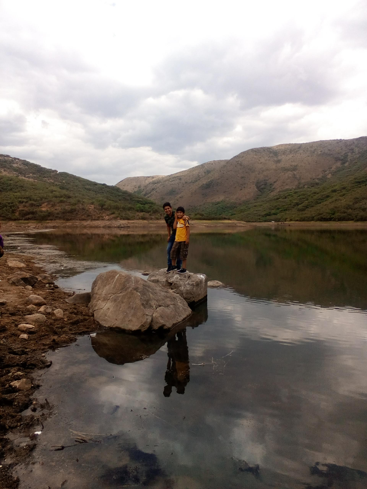

Un poco sobre mí, mis intereses y mis gustos personales.
Mi nombre es Jesús Alberto Cortes García. Soy estudiante del área de tecnologías de la información y desarrollo de software.
Me encanta mi carrera y espero tener la oportunidad de desarrollar una aplicación que ayude a las personas. Actualmente sigo aumentando mis conocimientos en programación, desarrollo web y bases de datos.
En este portafolio comparto un poco de mi perfil, mis estudios y mis experiencias.

Mi nombre es Jesús Alberto Cortes García.
Soy estudiante del área de tecnologías de la información y desarrollo de software.Me encanta mi carrera y espero tener la oportunidad de desarrollar una aplicación que ayude a las personas.
Uno de los gustos mas apartados que tengo es la música de antes y una de ellas son murió la flor como muchas otras más. Siendo sincero me gusta este tipo de canción y tengo como coloquialmente se le dice "Alma vieja" por escuchar este tipo de género.